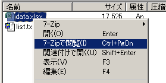
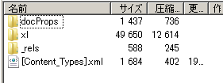
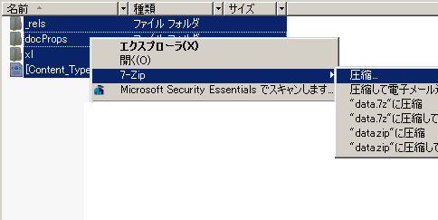
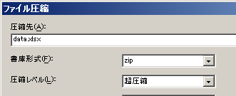

xlsxやpptxファイルの再圧縮
Microsoft Officeの2007以降のドキュメントでは、xlsxやpptxなどの新しいフォーマットが使われていますが、7-Zipを使ってその中身の閲覧やファイルサイズを小さくすることができます。これらのMicrosoft Officeのファイルは、ファイルは拡張子こそ独自の名前が付いていますが、その実体はただのZIPファイルです。
Microsoft Officeファイルの中身を見る
たとえば、「xlsx」の部分を「zip」と書き換えれば、そのまま任意の圧縮・展開ツールで開くことが可能です。
7-Zipでは、拡張子を「zip」に書き換えても表示できますが、拡張子を変更せず、xlsxファイルを閲覧した状態で、Ctrl＋PageDownキーを押すか、右クリックから「7-Zipで閲覧」を選択することでも、ファイルの中身を見ることができます。
↓↓↓↓↓↓↓↓↓↓
このようにZIP形式圧縮されて昔の形式よりも比較的ファイルサイズが小さくなった新しいMicrosoft Officeドキュメントですが、Microsoft Office標準のZIP圧縮は7-Zipほどはよくありません。7-Zipの高圧縮率のZIPで圧縮し直すことによって、ファイルサイズをさらに小さくすることが可能です。
基本的な再圧縮の流れ
xlsxやpptxファイルを小さくする再圧縮の作業は、特別なことはなく、一度ZIPファイルとして解凍して、7-Zipで圧縮し直すだけです。
解凍方法は2つあり、上記で説明したように7-Zipを起動してからファイルの中身を閲覧した状態にして、「展開」ボタンを押し、任意のフォルダにファイル＆フォルダ一式全部を展開します。
もう1つは該当ファイルを右クリックして、7-Zipのメニューから「展開」を選びます。拡張子を変更せずにそのまま解凍できます。また、「ファイル名\」に展開というメニューがあれば、これを選ぶことでフォルダ作成から解凍まで一発で実行されます。
次に解凍したフォルダに移動して、7-Zip File Manegeerやエクスプローラ上でファイルを全選択して圧縮を行います。
次に表示される圧縮メニューで、書庫形式：「zip」、圧縮レベル：「超圧縮」となっていることを確認して、圧縮先に元のファイル名を記入します。
これで圧縮すると、解凍したフォルダ内に再圧縮したファイルが作成されます。作成されたファイルを一度きちんと開けるか確認して、問題なければ元のファイルと置き換えれば作業は完了です。
再圧縮の自動化
解凍して圧縮してという作業を一括で行いたい場合は、BATファイルなどのスクリプトと7-Zipのコマンドを活用するといいでしょう。好みの自動化が可能です。
たとえば、メモ帳などのテキストエディタで、以下のようなスクリプトを内容を記述し、「～.bat」（たとえば「超圧縮zip.bat」）というファイル名で保存すれば、そのBATアイコンにxlsxファイルなどをドラッグ＆ドロップすることで、再圧縮がされます。
@echo off set exe="C:\Program Files\7-Zip\7z.exe" %exe% x -o$$temp$$ %1 >> NUL move %1 %1.tmp >> NUL cd $$temp$$ %exe% a -tzip -mx=9 %~p1%~n1%~x1 * >> NUL cd .. rmdir /S /Q $$temp$$
このスクリプトを簡単に説明すると、まず、「@echo off」で表示されるメッセージを最小限にし、exe変数に7-Zipのコマンドパスを設定しています。 次に、ドラッグ＆ドロップされたファイル（%1）を$$temp$$フォルダ（-o）に解凍（x）しています。そのとき表示されるメッセージは「>> NUL」で捨てています（表示されない）。以降は、
move %1 %1.tmp 元のファイルを.tmp付きファイル名で退避
cd $$temp$$ 圧縮作業のためにカレントフォルダを$$temp$$に移動
%exe% a -tzip -mx=9 %~p1%~n1%~x1 * >> NUL ZIP形式で、最高（-mx=9）圧縮
cd .. $$temp$$の外に出る
rmdir /S /Q $$temp$$ $$temp$$を削除
という流れです。出力ファイル名を変更したい場合は、「%~p1%~n1%~x1」を編集します。たとえば、ファイル名の先頭に「7zip-」と付けたい場合は、「%~p17zip-%~n1%~x1」となります。%~p1がパス、%~n1がファイル名、%~x1が拡張子です。
再圧縮時に元のファイルを上書きしても問題なければ、moveの行とrmdirを削除すればもっと単純なスクリプトになります。
なお、上記のスクリプトは複数ファイルの変換には対応していません。1つのファイルだけをドラッグ＆ドロップするように注意してください。
OSDN Project